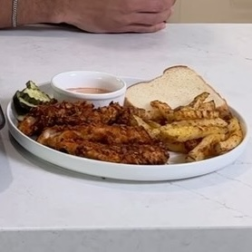

Hot chicken (pollo con papas fritas)
Ingredientes:
- 8 oz de filetes de pechuga de pollo
- 30 g de copos de maíz triturados
- 30 g de salsa Frank's Red Hot
- 1 rebanada de pan bajo en calorías (Nature's Own 40 cal)
- 8 oz de papas
Mezcla de condimentos picantes:
- 6 g de pimienta de cayena
- 4 g de sal
- 8 g de sustituto de azúcar (monk fruit, splenda, stevia)
- 6 g de pimentón
- 6 g de pimienta negra
- 3 g de ajo en polvo
Marinado:
- 113 g de yogur griego
- 30 g de salsa Frank's Red Hot
- Usa la mitad de la mezcla de condimentos picantes
Coberturas:
- Rociado de miel
Instrucciones:
- Mezcla de condimentos picantes: dependiendo de tu tolerancia al picante, ten cuidado con la cantidad
que usas. Usé 6g de cayena y tenía bastante intensidad.
- Marinado de pollo: añade 113g de yogur griego, 30g de Frank's Red Hot y la mitad de tu mezcla de
condimentos a un bol y mezcla.
- Ahora haz tu mezcla de marinado y ANTES de añadir los filetes de pechuga de pollo, aparta un poco en
un platillo para tu salsa.
- Añade el marinado y los filetes de pollo a una bolsa ziplock de galón. Usa tus manos para masajear
el marinado hasta que los filetes estén bien cubiertos.
- Ahora toma un bol poco profundo y añade tus copos de maíz triturados y la otra mitad de tu mezcla de
condimentos picantes. Asegúrate de que los filetes estén bien cubiertos con los copos.
- Una vez que estén todos cubiertos, añade los filetes a un lado de tu freidora de aire.
- Corta 8oz de papas en forma de papas fritas (usa un cortador de papas ondulado si lo tienes o solo
un cuchillo regular). Salpica las papas con sal y añádelas al otro lado de la freidora de aire.
- Fríe al aire a 400 grados F durante 12 minutos. Voltea a la mitad del tiempo. Una vez que estén
listas, rocía con miel y disfruta con tu pan.